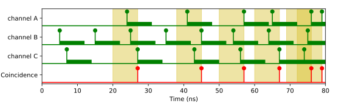
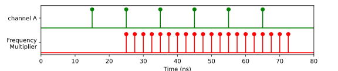
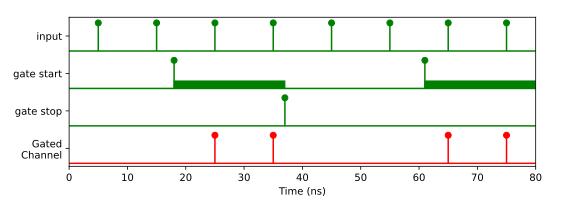
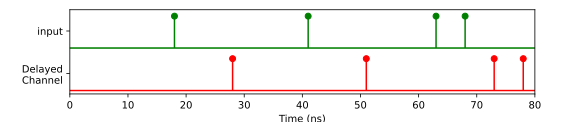
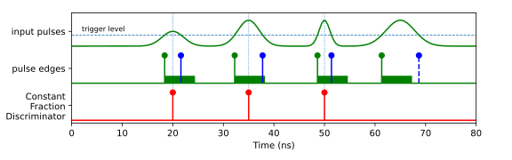
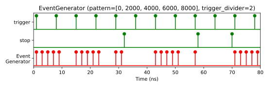

Virtual Channels
Virtual channels are software-defined channels as compared to the real input channels. Virtual channels can be understood as a stream flow processing units. They have an input through which they receive time-tags from a real or another virtual channel and output to which they send processed time-tags.
Virtual channels are used as input channels to the measurement classes the same way as real channels. Since the virtual channels are created during run-time, the corresponding channel number(s) are assigned dynamically and can be retrieved using getChannel() or getChannels() methods of virtual channel object.
Available virtual channels
Note
In MATLAB, the Virtual Channel names have common prefix TT*. For example: Combiner is named as TTCombiner. This prevents possible name collisions with existing MATLAB or user functions.
- Combiner
Combines two or more channels into one.
- ConstantFractionDiscriminator
Detects rising and falling edges of an input pulse and returns the average time.
- Coincidence
Detects coincidence clicks on two or more channels within a given window.
- Coincidences
Detects coincidence clicks on multiple channel groups within a given window.
- DelayedChannel
Clones input channels which can be delayed.
- FrequencyMultiplier
Frequency Multiplier for a channel with a periodic signal.
- GatedChannel
Transmits signals of an input_channel depending on the signals arriving at gate_start_channel and gate_stop_channel.
- EventGenerator
Generates a signal pattern for every trigger signal.
- TriggerOnCountrate
Generates an event when the count rate of a given channel crosses given threshold value.
Common methods
- VirtualChannel.getChannel()
- VirtualChannel.getChannels()
Returns the channel number(s) corresponding to the virtual channel(s). Use this channel number the very same way as the channel number of physical channel, for example, as an input to a measurement class or another virtual channel.
Important
Virtual channels operate on the time tags that arrive at their input. These time tags can be from rising or falling edges of the physical signal. However, the virtual channels themselves do not support such a concept as an inverted channel.
- getConfiguration()
Returns configuration data of the virtual channel object. The configuration includes the name, values of the current parameters and the channel numbers. Information returned by this method is also provided with
TimeTaggerBase.getConfiguration().- Returns:
Configuration data of the virtual channel object.
- Return type:
Combiner

Combines two or more channels into one. The virtual channel is triggered, e.g., for two channels when either channel A OR channel B received a signal.
- class Combiner(tagger, channels=[])
- Parameters:
tagger (TimeTaggerBase) – time tagger object instance
channels (list[int]) – List of channels to be combined into a single virtual channel
Coincidence
Detects coincidence clicks on two or more channels within a given window. The virtual channel is triggered, e.g., when channel A AND channel B received a signal within the given coincidence window. The timestamp of the coincidence on the virtual channel is the time of the last event arriving to complete the coincidence.
- class Coincidence(tagger, channels, coincidenceWindow=1000, timestamp=CoincidenceTimestamp.Last)
- Parameters:
tagger (TimeTaggerBase) – time tagger object instance
channels (list[int]) – list of channels on which coincidence will be detected in the virtual channel
coincidenceWindow (int) – maximum time between all events for a coincidence [ps]
timestamp (CoincidenceTimestamp) – type of timestamp for virtual channel
Coincidences
Detects coincidence clicks on multiple channel groups within a given window. If several different coincidences are required with the same window size, Coincidences provides better performance in comparison to multiple virtual Coincidence channels.
One object of the Coincidence class is limited to 64 unique channels in the list of channel groups (coincidenceGroup).
Example code:
from TimeTagger import Coincidence, Coincidences, CoincidenceTimestamp, createTimeTagger
tagger = createTimeTagger()
coinc = Coincidences(tagger, [[1,2], [2,3,5]], coincidenceWindow=10000, timestamp=CoincidenceTimestamp.ListedFirst)
coinc_chans = coinc.getChannels()
coinc1_ch = coinc_chans[0] # double coincidence in channels [1,2] with timestamp of channel 1
coinc2_ch = coinc_chans[1] # triple coincidence in channels [2,3,5] with timestamp of channel 2
# or equivalent but less performant
coinc1 = Coincidence(tagger, [1,2], coincidenceWindow=10000, timestamp=CoincidenceTimestamp.ListedFirst)
coinc2 = Coincidence(tagger, [2,3,5], coincidenceWindow=10000, timestamp=CoincidenceTimestamp.ListedFirst)
coinc1_ch = coinc1.getChannel() # double coincidence in channels [1,2] with timestamp of channel 1
coinc2_ch = coinc2.getChannel() # triple coincidence in channels [2,3,5] with timestamp of channel 2
Note
Only C++ and python support jagged arrays (array of arrays, like uint[][]) which are required to combine several coincidence groups and pass them to the constructor of the Coincidences class. Hence, the API differs for Matlab, which requires a cell array of 1D vectors to be passed to the constructor (see Matlab examples provided with the installer). For LabVIEW, a CoincidencesFactory-Class is available to create a Coincidences object, which is also shown in the LabVIEW examples provided with the installer).
- class Coincidences(tagger, coincidenceGroups, coincidenceWindow, timestamp)
- Parameters:
tagger (TimeTaggerBase) – time tagger object instance
coincidenceGroups (list[list[int]]) – list of channel groups on which coincidence will be detected in the virtual channel
coincidenceWindow (int) – maximum time between all events for a coincidence [ps]
timestamp (CoincidenceTimestamp) – type of timestamp for virtual channel (Last, Average, First, ListedFirst)
FrequencyMultiplier
Frequency Multiplier for a channel with a periodic signal.
Note
Very high output frequencies create a high CPU load, eventually leading to overflows.
- class FrequencyMultiplier(tagger, input_channel, multiplier)
- Parameters:
tagger (TimeTaggerBase) – time tagger object instance
input_channel (int) – channel on which the upscaling of the frequency is based on
multiplier (int) – frequency upscaling factor
GatedChannel
Transmits the signal from an input_channel to a new virtual channel between an edge detected at the gate_start_channel and the gate_stop_channel.
- class GatedChannel(tagger, input_channel, gate_start_channel, gate_stop_channel, initial=GatedChannelInitial.Closed)
- Parameters:
tagger (TimeTaggerBase) – Time Tagger object
input_channel (int) – Channel which is gated
gate_start_channel (int) – Channel on which a signal detected will start the transmission of the input_channel through the gate
gate_stop_channel (int) – Channel on which a signal detected will stop the transmission of the input_channel through the gate. Note that gate_stop_channel == gate_start_channel will result in an exception.
initial (GatedChannelInitial) – The initial state of the gate. If overflows occur, the gate will be reset to this state as well. By default, the state is
Closed.
Note
If you assign the same channel to input_channel and to gate_start_channel or gate_stop_channel, respectively, the internal execution order of the transmission decision and the gate operation (opening or closing) becomes important: For each tag on the input_channel, the decision is made based on the previous state. After this decision is made for itself, the tag might toggle the gate state.
- input_channel == gate_stop_channel:
If the gate is open prior to the arrival of the tag, the tag will pass the gate and close it afterward. All subsequent tags will be eliminated until an event on gate_start_channel opens the gate again. This means that after the gate has been opened, only a single tag will pass the gate, which is exactly the behavior of the Conditional Filter with with gate_start_channel acting as the trigger and input_channel acting as the filtered channel.
- input_channel == gate_start_channel:
If the gate is open prior to the arrival of the tag, the tag itself will be blocked but opens the gate afterward. All subsequent tags will pass the gate until an event on gate_stop_channel closes the gate again. This means that every event on gate_stop_channel will eliminate exactly the next event on the input_channel.
This behavior has been changed in software version 2.10.8.
DelayedChannel
Clones input channels, which can be delayed by a time specified with the delay parameter in the constructor or the setDelay() method. A negative delay will delay all other events.
Note
If you want to set a global delay for one or more input channels, setInputDelay() is recommended as long as the delays are small, which means that not more than 100 events on all channels should arrive within the maximum delay set.
- class DelayedChannel(tagger, input_channel, delay)
- Parameters:
tagger (TimeTaggerBase) – time tagger object
input_channel (int) – channel to be delayed
delay (int) – amount of time to delay in ps
ConstantFractionDiscriminator
Constant Fraction Discriminator (CFD) detects rising and falling edges of an input pulse and returns the average time of both edges. This is useful in situations when precise timing of the pulse position is desired for the pulses of varying durations and amplitudes.
For example, the figure above shows four input pulses separated by 15 nanoseconds. The first two pulses have equal widths but different amplitudes, the middle two pulses have equal amplitude but different durations, and the last pulse has a duration longer than the search_window and is therefore skipped. For such input signal, if we measure the time of the rising edges only, we get an error in the pulse positions, while with CFD this error is eliminated for symmetric pulses.
Note
The virtual CFD requires the time tags of the rising and falling edge. This leads to:
The transferred data of the input channel is twice the regular input rate.
When you shift the signal, e.g., via
setInputDelay(), you have to shift both edges.When you use the conditional filter, apply the trigger from both channels.
- class ConstantFractionDiscriminator(tagger, channels, search_window)
- Parameters:
tagger (TimeTagger) – TimeTagger object
channels (list[int]) – list of channels on which to perform CFD
search_window (int) – max pulse duration in picoseconds to be detected
EventGenerator
Emits an arbitrary pattern of timestamps for every trigger event. The number of trigger events can be reduced by trigger_divider. The start of a new pattern does not abort the execution of unfinished patterns, so patterns may overlap. The execution of all running patterns can be aborted by a click of the stop_channel, i.e. overlapping patterns can be avoided by setting the stop_channel to the trigger_channel.
- class EventGenerator(tagger, trigger_channel, pattern, trigger_divider, stop_channel)
- Parameters:
tagger (TimeTaggerBase) – Time Tagger object instance.
trigger_channel (int) – Channel number of the trigger signal.
pattern (list[int]) – List of relative timestamps defining the pattern executed upon a trigger event.
trigger_divider (int) – Factor by which the number of trigger events is reduced. (default: 1)
divider_offset (int) – If trigger_divider > 1, the divider_offset the number of trigger clicks to be ignored before emitting the first pattern. (default: 0)
stop_channel (int) – Channel number of the stop channel. (optional)
TriggerOnCountrate
Measures the count rate inside a rolling time window and emits tags when a defined reference_countrate is crossed.
A TriggerOnCountrate object provides two virtual channels: The above channel is triggered when the count rate exceeds the threshold (transition from below to above). The below channel is triggered when the count rate falls below the threshold (transition from above to below).
To avoid the emission of multiple trigger tags in the transition area, the hysteresis count rate modifies the threshold with respect to the transition direction: An event in the above channel will be triggered when the channel is in the below state and rises to reference_countrate + hysteresis or above. Vice versa, the below channel fires when the channel is in the above state and falls to the limit of reference_countrate - hysteresis or below.
The time-tags are always injected at the end of the integration window.
You can use the DelayedChannel to adjust the temporal position of the trigger tags with respect to the integration time window.
The very first tag of the virtual channel will be emitted time_window after the instantiation of the object and will reflect the current state, so either above or below.
- class TriggerOnCountrate(tagger, input_channel, reference_countrate, hysteresis, time_window)
- Parameters:
tagger (TimeTaggerBase) – Time Tagger object instance.
input_channel (int) – Channel number of the channel whose count rate will control the trigger channels.
reference_countrate (float) – The reference count rate in Hz that separates the above range from the below range.
hysteresis (float) – The threshold count rate in Hz for transitioning to the above threshold state is countrate >= reference_countrate + hysteresis, whereas it is countrate <= reference_countrate - hysteresis for transitioning to the below threshold state. The hysteresis avoids the emission of multiple trigger tags upon a single transition.
time_window (int) – Rolling time window size in ps. The count rate is analyzed within this time window and compared to the threshold count rate.
- getChannelAbove()
Get the channel number of the above channel.
- getChannelBelow()
Get the channel number of the below channel.
- getChannels()
Get both virtual channel numbers: [
getChannelAbove(),getChannelBelow()]
- getCurrentCountrate()
Get the current count rate averaged within the time_window.
- injectCurrentState()
Emit a time-tag into the respective channel according to the current state. This is useful if you start a new measurement that requires the information. The function returns whether it was possible to inject the event. The injection is not possible if the Time Tagger is in overflow mode or the time window has not passed yet. The function call is non-blocking.
- isAbove()
Returns whether the Virtual Channel is currently in the above state.
- isBelow()
Returns whether the Virtual Channel is currently in the below state.